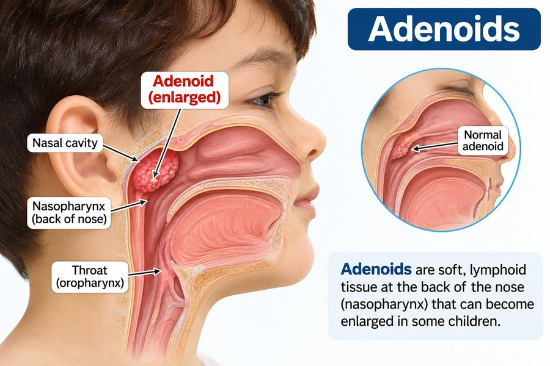
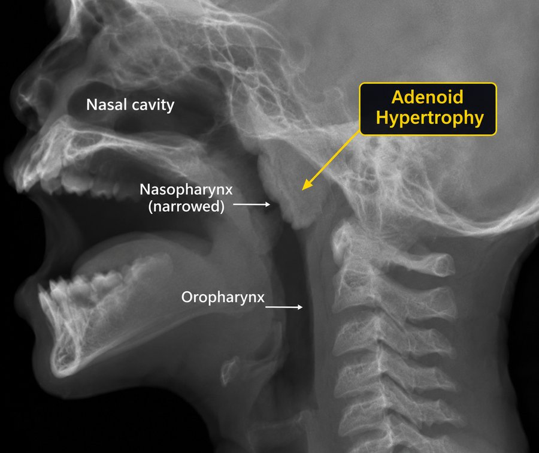
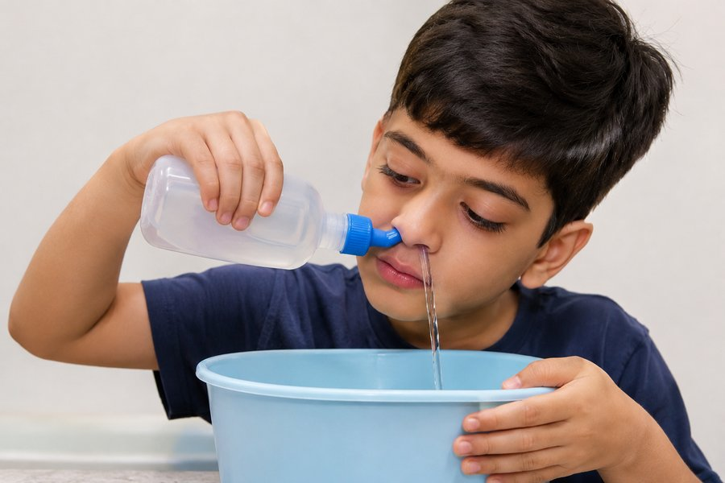
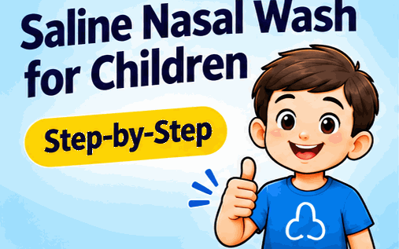
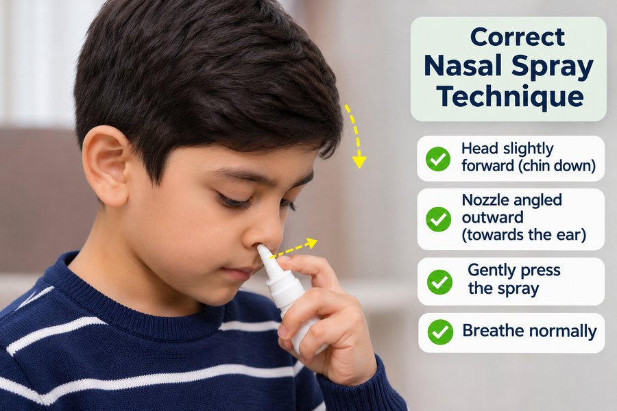
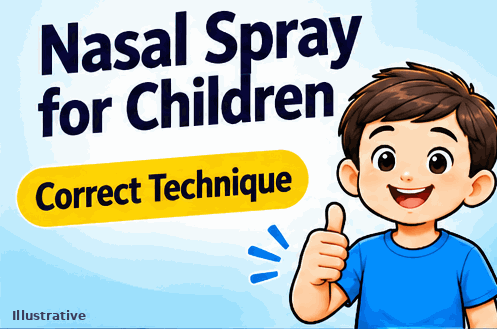

Allergic rhinitis, with or without enlarged adenoids: a parent's guideएलर्जिक राइनाइटिस, बढ़े हुए एडेनॉयड्स के साथ या बिना: माता-पिता के लिए गाइड
Many children who sneeze, have a blocked nose or snore at night have allergic rhinitis. Enlarged adenoids can add to the problem. Here is what it is, what helps at home, and when medicines or surgery may be needed.बहुत से बच्चे छींकते हैं, नाक बंद रहती है या रात को खर्राटे लेते हैं। इनमें से कई बच्चों को एलर्जिक राइनाइटिस होता है। बढ़े हुए एडेनॉयड्स इस समस्या को और बढ़ा सकते हैं। यहाँ बताया गया है कि यह क्या है, घर पर क्या मदद करता है, और कब दवा या सर्जरी की ज़रूरत हो सकती है।
1What is allergic rhinitis?एलर्जिक राइनाइटिस क्या है?
Allergic rhinitis is inflammation of the nasal lining caused by an allergy. The immune system overreacts to harmless particles in the air. Common triggers are:एलर्जिक राइनाइटिस नाक की अंदरूनी परत की सूजन है, जो एलर्जी की वजह से होती है। शरीर की रोग-प्रतिरोधक प्रणाली हवा में मौजूद हानिरहित कणों पर भी ज़्यादा प्रतिक्रिया देती है। आम कारण हैं:
- House dust mites (a very common trigger)घर की धूल के कण (बहुत आम कारण)
- Pollen, grass and weeds, depending on the seasonमौसम के अनुसार पराग, घास और खरपतवार
- Pet fur or danderपालतू जानवरों के बाल या रूसी
- Mould spores, especially in damp roomsसीलन वाले कमरों में फफूंद के बीजाणु
- Smoke, incense, mosquito coils, strong smells, or cold dry airधुआँ, अगरबत्ती, मच्छर कॉइल, तेज़ गंध या ठंडी और सूखी हवा
When the child meets a trigger again, the body releases chemicals such as histamine. These swell the nasal lining, increase mucus and cause itching. Allergies often run in families.जब बच्चा दोबारा किसी कारण के संपर्क में आता है, तो शरीर हिस्टामिन जैसे रसायन छोड़ता है। इससे नाक की परत फूलती है, बलगम बढ़ता है और खुजली होती है। एलर्जी अक्सर परिवार में चलती है।
2What are adenoids, and why do they matter?एडेनॉयड्स क्या हैं, और ये क्यों मायने रखते हैं?
Adenoids are a patch of lymph tissue high at the back of the nose. They are part of the body's defence system, and they are large in young children. They usually shrink after school age.एडेनॉयड्स नाक के पिछले हिस्से में ऊपर की ओर लिम्फ ऊतक का एक टुकड़ा हैं। ये शरीर की रक्षा प्रणाली का हिस्सा हैं और छोटे बच्चों में बड़े होते हैं। स्कूल की उम्र के बाद आमतौर पर ये सिकुड़ जाते हैं।

Adenoids can grow larger after repeated colds, sinus infections or long-standing nasal inflammation from allergy. An enlarged adenoid can block airflow through the nose. Allergy and adenoid enlargement often occur together, and each can make the other worse.बार-बार सर्दी-जुकाम, साइनस इन्फेक्शन या एलर्जी से लंबे समय तक नाक में सूजन रहने पर एडेनॉयड्स बढ़ सकते हैं। बढ़े हुए एडेनॉयड्स नाक से साँस के रास्ते को रोक सकते हैं। एलर्जी और एडेनॉयड्स का बढ़ना अक्सर साथ होते हैं, और दोनों एक-दूसरे को बिगाड़ सकते हैं।
3Symptoms to watch forकिन लक्षणों पर ध्यान दें
Allergic rhinitisएलर्जिक राइनाइटिस
- Frequent sneezing, often in bouts, especially on wakingबार-बार छींकें, अक्सर झटकों में, खासकर सुबह उठते समय
- Clear, watery runny nose, or a constant sniffपतला, पानी जैसा नाक बहना, या बार-बार नाक सुड़कना
- Itchy nose, eyes or throat; the child may rub the nose upwardsनाक, आँख या गले में खुजली; बच्चा नाक को ऊपर की ओर रगड़ सकता है
- Blocked nose, usually on both sidesनाक बंद रहना, आमतौर पर दोनों तरफ़
- Itchy, watery or red eyes, and dark rings under the eyesआँखों में खुजली, पानी या लालिमा, और आँखों के नीचे काले घेरे
Signs that adenoids may be enlargedएडेनॉयड्स बढ़े होने के संकेत
- Mouth breathing, especially during sleepमुँह से साँस लेना, खासकर सोते समय
- Loud snoring, or pauses in breathing at nightतेज़ खर्राटे, या रात में साँस का रुकना
- Restless sleep, bedwetting, or waking tiredबेचैन नींद, बिस्तर गीला होना, या थके हुए उठना
- A "blocked" or nasal voiceभारी या नाक से बोली जैसी आवाज़
- Repeated ear infections, or a feeling of blocked earsबार-बार कान का इन्फेक्शन, या कान बंद-से लगना
- Poor attention or a drop in school performance, often because of poor sleepपढ़ाई में ध्यान कम होना या स्कूल में प्रदर्शन गिरना, अक्सर खराब नींद की वजह से

If the problem continues for a long time, it can lead to recurrent sinus infections, glue ear (fluid in the middle ear that reduces hearing), and asthma flare-ups.अगर समस्या लंबे समय तक बनी रहे, तो बार-बार साइनस इन्फेक्शन, ग्लू ईयर (कान के बीच में द्रव जमना, जिससे सुनाई कम देता है) और अस्थमा के दौरे बढ़ सकते हैं।
4Nasal polyps: when to suspect themनाक के पॉलिप: कब शक करें
Nasal polyps are soft, painless growths from the lining of the nose or sinuses. They are uncommon in young children, but they can occur, especially in children with long-standing allergy, asthma or sinus disease. Polyps often block the nose and can look like an adenoid or sinus problem, so a doctor's examination is important.नाक पॉलिप मुलायम, बिना दर्द वाली गाँठें हैं जो नाक या साइनस की परत से बढ़ती हैं। छोटे बच्चों में ये कम पाए जाते हैं, पर हो सकते हैं, खासकर लंबे समय की एलर्जी, अस्थमा या साइनस की बीमारी वाले बच्चों में। पॉलिप अक्सर नाक बंद करते हैं और एडेनॉयड या साइनस की समस्या जैसे लग सकते हैं, इसलिए डॉक्टर की जाँच ज़रूरी है।
Think about polyps if your child has:इन लक्षणों में पॉलिप के बारे में सोचें:
- A persistent blocked nose, on one side or both sides, that does not improve with treatment for several weeksनाक लगातार बंद रहे, एक तरफ़ या दोनों तरफ़, और कई हफ़्तों के इलाज से भी न सुधरे
- Reduced or absent sense of smell, or a child who does not notice smellsसूंघने की शक्ति कम होना, या बच्चे को गंध का पता न चलना
- A constant runny nose or a nasal voice that persistsलगातार नाक बहना या नाक से बोली जैसी आवाज़ का बने रहना
- Repeated sinus infections, or thick discharge that keeps coming backबार-बार साइनस इन्फेक्शन, या गाढ़ा स्राव जो बार-बार लौटे
- Snoring or mouth breathing that continues despite treatmentइलाज के बावजूद खर्राटे या मुँह से साँस लेना जारी रहे
- Asthma that is hard to control, or breathing difficulty during allergy flaresऐसा अस्थमा जिसे काबू करना मुश्किल हो, या एलर्जी के दौरान साँस की तकलीफ़
Please see your doctor, who will examine the child and decide whether further tests are needed. The doctor may look inside the nose with a small camera (nasal endoscopy). Treatment usually includes nasal steroid treatment as advised. Some polyps may need removal, and the decision depends on the examination and findings.कृपया डॉक्टर को दिखाएँ, जो बच्चे की जाँच करेंगे और तय करेंगे कि और जाँच की ज़रूरत है या नहीं। डॉक्टर छोटे कैमरे (नेज़ल एंडोस्कोपी) से नाक के अंदर देख सकते हैं। इलाज में आमतौर पर डॉक्टर की सलाह के अनुसार नेज़ल स्टेरॉयड इलाज शामिल होता है। कुछ पॉलिप निकालने पड़ सकते हैं, और यह जाँच और नतीजों पर निर्भर करता है।
Seek medical care urgently if your child hasअगर आपके बच्चे में ये लक्षण हों, तो तुरंत डॉक्टर को दिखाएँ
- Pauses in breathing during sleep, or gasping or struggling to breatheसोते समय साँस रुकना, या हाँफना, या साँस लेने में ज़ोर लगाना
- Blue or grey colour of lips or faceहोंठ या चेहरे का नीला या स्लेटी रंग
- Difficulty feeding or swallowingदूध पीने या निगलने में तकलीफ़
- Noisy breathing when awake, or harsh sounds from the chest or throatजागते समय साँस में घरघराहट, या छाती-गले से कर्कश आवाज़
- Fever with severe illness, or a child who looks very unwellतेज़ बुखार के साथ गंभीर बीमारी, या ऐसा बच्चा जो बहुत बीमार दिखे
- Nosebleeds that keep coming backबार-बार होने वाली नकसीर
- Discharge from only one side of the nose, especially if foul-smelling or blood-stainedसिर्फ़ एक नथुने से स्राव, खासकर बदबूदार या खून वाला
5Home careघर पर देखभाल
Home care does not cure allergic rhinitis, but it reduces exposure and makes symptoms easier to manage.घर पर देखभाल से एलर्जिक राइनाइटिस ठीक नहीं होती, पर एलर्जी के संपर्क को कम करती है और लक्षणों को संभालना आसान बनाती है।
- Reduce dust. Use mattress and pillow covers. Wash bedsheets and soft toys weekly in hot water. Avoid heavy carpets and curtains in the bedroom. Dust with a damp cloth.धूल कम करें। गद्दे और तकिए पर कवर लगाएँ। चादरें और नरम खिलौने हफ़्ते में एक बार गर्म पानी से धोएँ। शयनकक्ष में भारी कालीन और परदे न रखें। गीले कपड़े से झाड़ू-पोंछा करें।
- Keep the bedroom trigger-free. Keep pets out of the child's bedroom. Keep windows closed on high-pollen or high-pollution days.शयनकक्ष को एलर्जी के कारणों से दूर रखें। पालतू जानवर बच्चे के कमरे से बाहर रखें। पराग या प्रदूषण वाले दिनों में खिड़कियाँ बंद रखें।
- After going outside, wash the child's face, hands and hair, and change clothes.बाहर से आने पर बच्चे का चेहरा, हाथ और बाल धोएँ, और कपड़े बदलें।
- Avoid smoke. Do not smoke at home or near the child. Keep incense sticks, mosquito coils and burning rubbish away from the child.धुएँ से बचें। घर में या बच्चे के पास धूम्रपान न करें। अगरबत्ती, मच्छर कॉइल और जलता कचरा बच्चे से दूर रखें।
- Keep any humidifier clean. Clean it daily with fresh water to prevent mould. Do not give steam from hot water to children, as the burn risk is high.ह्यूमिडिफ़ायर हो तो रोज़ ताज़े पानी से साफ़ करें, ताकि फफूंद न लगे। बच्चों को गर्म पानी की भाप न दें, इससे जलने का खतरा बहुत है।
- Track triggers. Note when symptoms start and what was around. This helps the doctor.लक्षण कब शुरू होते हैं और आसपास क्या था, यह लिखें। इससे डॉक्टर को मदद मिलती है।
- Avoid shop cough and cold medicines for children under 2 years without a doctor's advice. Do not use decongestant nasal drops for more than a few days, because they can make the blockage worse.2 साल से छोटे बच्चों को डॉक्टर की सलाह के बिना दुकान से खाँसी-जुकाम की दवा न दें। डीकंजेस्टेंट नाक की बूँदें कुछ दिनों से ज़्यादा न डालें, क्योंकि इससे बंद नाक और बढ़ सकती है।
6Nasal wash (saline rinse)नमक-पानी से नाक धोना
A saline wash gently clears mucus and dust from the nose. It is a simple step at home, done as your doctor advises.नमक-पानी से नाक धोने से बलगम और धूल धीरे से साफ़ होते हैं। घर पर यह एक सरल कदम है, जो डॉक्टर की सलाह के अनुसार किया जाता है।
Use a nasal wash only as advised by your doctor.नाक धोना केवल डॉक्टर की सलाह पर करें।


How to do itकैसे करें
- Use boiled and cooled water, or the sterile saline sachet your doctor provides. Do not use tap water directly.उबला और ठंडा किया हुआ पानी, या डॉक्टर का दिया बाँझ (स्टेरिल) नमक-पानी का सैशे लें। नल का पानी सीधे इस्तेमाल न करें।
- Have the child sit up or lean forward, with the head tilted slightly over a sink or basin, and breathe through the mouth.बच्चे को सीधा बैठाएँ या आगे झुकाएँ, सिर को हल्का सा सिंक या बेसिन की ओर झुकाएँ, और वह मुँह से साँस ले।
- Place the tip of the bottle at the upper nostril. Squeeze gently so the solution flows in and out of the other nostril.बोतल की नोक ऊपर वाले नथुने पर रखें। धीरे दबाएँ, ताकि घोल एक नथुने से अंदर जाए और दूसरे से बाहर आए।
- Let the child blow the nose gently, one side at a time. Do not force the mucus back.बच्चे को एक-एक तरफ़ करके धीरे से नाक साफ़ करने दें। बलगम को ज़ोर से अंदर न खींचें।
- Use it once or twice a day, and before the nasal spray.दिन में एक या दो बार करें, और नेज़ल स्प्रे से पहले।
Never use hot water. Do not push the nozzle deep into the nose. If the child coughs, chokes or gets distressed, stop and try again later. Consult the doctor before using a wash in a newborn or a child with recent ear problems.कभी गर्म पानी न लें। नोज़ल नाक में गहरा न डालें। अगर बच्चा खाँसे, दम घुटे या परेशान हो, तो रोक दें और बाद में फिर कोशिश करें। नवजात या हाल में कान की तकलीफ़ वाले बच्चे में नाक धोने से पहले डॉक्टर से पूछें।
7Nasal spray: how to use it correctlyनेज़ल स्प्रे: सही तरीके से कैसे इस्तेमाल करें
Prescribed nasal steroid sprays work when used every day, as prescribed. They reduce inflammation, so they take time to show their full effect (often 1 to 2 weeks, sometimes longer). Stopping them as soon as the child feels better can bring symptoms back.डॉक्टर द्वारा बताए गए नेज़ल स्टेरॉयड स्प्रे रोज़ नियमित रूप से, बताए अनुसार इस्तेमाल करने पर असर करते हैं। ये सूजन कम करके काम करते हैं, इसलिए पूरा असर दिखने में समय लगता है (अक्सर 1 से 2 हफ़्ते, कभी-कभी ज़्यादा)। बच्चा ठीक लगने लगे तो अचानक बंद करने से लक्षण लौट सकते हैं।
Use a nasal spray only as advised by your doctor, and only the spray prescribed for your child.नेज़ल स्प्रे केवल डॉक्टर की सलाह पर इस्तेमाल करें, और बच्चे के लिए बताया गया स्प्रे ही।


How to do itकैसे करें
- Wash your hands, and sit the child comfortably.अपने हाथ धोएँ, और बच्चे को आराम से बैठाएँ।
- Gently blow the nose first, one side at a time, so the spray can reach the lining. Do not blow hard.पहले धीरे से नाक साफ़ करें, एक-एक तरफ़ करके, ताकि स्प्रे परत तक पहुँचे। ज़ोर से न फूँकें।
- Ask the child to lean slightly forward and look down.बच्चे से कहें कि थोड़ा आगे झुककर नीचे देखे।
- Shake the bottle as directed. Gently insert the nozzle into one nostril.बताए अनुसार बोतल हिलाएँ। नोज़ल एक नथुने में धीरे से डालें।
- Aim the nozzle outward, towards the ear, away from the middle of the nose.नोज़ल को बाहर की ओर, कान की तरफ़ रखें, नाक के बीच से दूर।
- Press the spray once while the child gently breathes in through the nose.बच्चा नाक से धीरे साँस ले, तब एक बार स्प्रे दबाएँ।
- Repeat for the other nostril, if prescribed.डॉक्टर ने कहा हो तो दूसरे नथुने में भी दोहराएँ।
If your child is using a wash and a spray, use the wash first, wait a few minutes, then use the spray. Wipe the nozzle clean after use.अगर बच्चा नाक धोने और स्प्रे दोनों का इस्तेमाल करता है, तो पहले नाक धोएँ, कुछ मिनट रुकें, फिर स्प्रे करें। इस्तेमाल के बाद नोज़ल साफ़ पोंछें।
Key tipsमुख्य बातें
- Use the spray every day, as prescribed.हर दिन, डॉक्टर के बताए अनुसार स्प्रे करें।
- Keep using it even when your child feels well.बच्चा ठीक लगे तब भी जारी रखें।
- Full effect can take 1 to 2 weeks.पूरा असर 1 से 2 हफ़्ते में दिख सकता है।
- Aim outward, not towards the centre of the nose.नोज़ल बाहर की ओर रखें, नाक के बीच की ओर नहीं।
- Keep the nozzle clean. Do not share the bottle.नोज़ल साफ़ रखें, बोतल किसी और के साथ साझा न करें।
- Do not sniff hard after spraying.स्प्रे के बाद ज़ोर से नाक न सुड़कें।
8Medicines: only after a doctor's prescriptionदवा: केवल डॉक्टर के पर्चे से
Medicines depend on the child's age, weight, symptoms and how often the problem occurs. They should be started only after the doctor has examined the child. Dose and duration must come from the prescription.दवा बच्चे की उम्र, वज़न, लक्षणों और समस्या कितनी बार होती है, इस पर निर्भर करती है। डॉक्टर से जाँच के बाद ही दवा शुरू करें। खुराक और कितने दिन लेनी है, यह केवल पर्चे से ही तय होगा।
- Nasal steroid sprays are often the main treatment for ongoing allergic rhinitis, and may reduce adenoid-related blockage in some children.नेज़ल स्टेरॉयड स्प्रे: लगातार रहने वाली एलर्जिक राइनाइटिस में अक्सर मुख्य इलाज होते हैं, और कुछ बच्चों में एडेनॉयड्स से होने वाली रुकावट को कम कर सकते हैं।
- Antihistamines (tablets, syrups or nasal sprays) reduce sneezing, itching and runny nose. Some can cause drowsiness, so the doctor chooses the right one.एंटीहिस्टामिन (गोली, सिरप या नाक का स्प्रे): छींक, खुजली और नाक बहना कम करती हैं। कुछ से नींद आ सकती है, इसलिए सही दवा डॉक्टर चुनते हैं।
- Leukotriene blockers (such as montelukast) may be prescribed for some children. They need regular review, because they can affect mood and sleep. Ask the doctor to explain these before starting.ल्यूकोट्रिन ब्लॉकर (जैसे मॉन्टेलूकास्ट): कुछ बच्चों को दिए जा सकते हैं। इन्हें नियमित जाँच चाहिए, क्योंकि ये मूड और नींद पर असर डाल सकते हैं। शुरू करने से पहले डॉक्टर से पूरी जानकारी लें।
- Allergy testing may be advised to find out what the child is allergic to. Some children may be considered for allergy drops or tablets (immunotherapy) under a specialist's care.एलर्जी टेस्ट: यह पता करने के लिए कि बच्चे को किस चीज़ से एलर्जी है, सलाह दी जा सकती है। कुछ बच्चों में विशेषज्ञ की देखरेख में एलर्जी की बूँदें या गोली (इम्यूनोथेरेपी) पर विचार हो सकता है।
Please do not stop or change a prescribed medicine on your own. If a medicine causes a problem, speak to the doctor.डॉक्टर की दवा अपने आप बंद या बदलें नहीं। दवा से कोई परेशानी हो तो डॉक्टर से बात करें।
9Homeopathy, herbal and other remediesहोम्योपैथी, हर्बल और अन्य उपचार
Many families ask about homeopathic, herbal or other alternative remedies. Scientific studies on these for allergic rhinitis and adenoid enlargement are limited, and their quality and content can vary. Please follow these rules:कई परिवार होम्योपैथिक, हर्बल या दूसरे वैकल्पिक उपायों के बारे में पूछते हैं। एलर्जिक राइनाइटिस और एडेनॉयड्स के बढ़ने पर इनके बारे में वैज्ञानिक अध्ययन सीमित हैं, और इनकी गुणवत्ता और सामग्री अलग-अलग हो सकती है। कृपया ये नियम मानें:
- Tell your doctor about every remedy your child is taking, including homeopathic drops, syrups, herbs, oils and supplements.बच्चे को दिए जा रहे हर उपाय के बारे में डॉक्टर को बताएँ, जिनमें होम्योपैथिक दवाएँ, सिरप, जड़ी-बूटी, तेल और सप्लीमेंट शामिल हैं।
- Never stop or replace a medicine prescribed by your doctor with another remedy without asking.डॉक्टर की दी हुई दवा बिना पूछे कभी बंद न करें, और किसी दूसरे उपाय से न बदलें।
- Do not put oils, herbs or drops inside the nose unless your doctor has advised it.डॉक्टर की सलाह के बिना नाक में तेल, जड़ी-बूटी या बूँदें न डालें।
- If your child has breathing difficulty, a rash, swelling of the face, or vomiting after any remedy, stop it and see the doctor at once.किसी भी उपाय के बाद बच्चे को साँस की तकलीफ़, चकत्ते, चेहरे पर सूजन या उल्टी हो, तो उपाय तुरंत बंद करें और डॉक्टर को तुरंत दिखाएँ।
10When is surgery considered?सर्जरी कब सोची जाती है?
Surgery is not the first step for most children with allergic rhinitis. Adenoid enlargement is usually first managed with allergy control, nasal washes, prescribed sprays and regular review.ज़्यादातर बच्चों में एलर्जिक राइनाइटिस के लिए सर्जरी पहला कदम नहीं है। बढ़े हुए एडेनॉयड्स को आमतौर पर पहले एलर्जी का नियंत्रण, नमक-पानी से नाक धोना, बताए गए स्प्रे और नियमित जाँच से संभाला जाता है।
Surgery to remove the adenoids (adenoidectomy) may be considered when:एडेनॉयड्स निकालने की सर्जरी (एडेनॉयडेक्टॉमी) पर तब विचार किया जा सकता है, जब:
- Sleep breathing problems continue, such as frequent snoring with pauses in breathing, despite treatmentइलाज के बावजूद नींद में साँस की दिक्कत बनी रहे, जैसे बार-बार खर्राटे और साँस का रुकना
- Ear fluid or ear infections keep returning, or last for several months and affect hearingकान में द्रव या कान का इन्फेक्शन बार-बार लौटे, या कई महीनों तक रहे और सुनने पर असर डाले
- Blockage continues, with mouth breathing, poor sleep or poor growth, even after a fair trial of medicines (usually several weeks to a few months)दवाओं का उचित समय तक (आमतौर पर कुछ हफ़्ते से कुछ महीने) इस्तेमाल करने के बाद भी नाक की रुकावट, मुँह से साँस, खराब नींद या कम बढ़वार बनी रहे
- Recurrent sinus infections continue despite treatmentइलाज के बावजूद बार-बार साइनस इन्फेक्शन होते रहें
- An ENT (ear, nose and throat) specialist has examined the child and recommended surgeryईएनटी (कान, नाक, गला) विशेषज्ञ ने जाँच करके सर्जरी की सलाह दी हो
Surgery is done under general anaesthesia, and the child usually goes home the same day or after a short stay. Surgery removes the enlarged adenoid tissue, but it does not cure the allergy. Children with allergic rhinitis still need nasal care and prescribed treatment after surgery.यह सर्जरी जनरल एनेस्थीसिया (बेहोश करके) में होती है, और बच्चा आमतौर पर उसी दिन या थोड़े समय रुककर घर जाता है। सर्जरी से बढ़े हुए एडेनॉयड्स निकलते हैं, पर एलर्जी ठीक नहीं होती। सर्जरी के बाद भी एलर्जिक राइनाइटिस वाले बच्चों को नाक की देखभाल और बताया गया इलाज जारी रखना पड़ता है।
For some children, regular nasal steroid treatment and allergy control reduce adenoid blockage enough to avoid surgery. This is not true for every child. Whether surgery is needed depends on examination, symptoms, sleep study findings where advised, and how the child responds to treatment. Your doctor and an ENT specialist will decide this together with you.कुछ बच्चों में नियमित नेज़ल स्टेरॉयड इलाज और एलर्जी के नियंत्रण से एडेनॉयड्स की रुकावट इतनी कम हो जाती है कि सर्जरी टल जाती है। यह हर बच्चे पर लागू नहीं होता। सर्जरी ज़रूरी है या नहीं, यह जाँच, लक्षण, जहाँ सलाह हो वहाँ नींद की जाँच, और बच्चा इलाज पर कैसे प्रतिक्रिया देता है, इस पर निर्भर करता है। आपके डॉक्टर और ईएनटी विशेषज्ञ यह आपके साथ मिलकर तय करेंगे।
11Common questionsआम सवाल
Symptoms often change with age and with treatment, but this differs from child to child. Your doctor will review the child at follow-up and plan the next steps.उम्र और इलाज के साथ लक्षण अक्सर बदलते हैं, पर यह हर बच्चे में अलग होता है। फ़ॉलो-अप में डॉक्टर बच्चे की जाँच करके आगे की योजना बनाएँगे।
Not always. The doctor decides based on the history and examination.हमेशा नहीं। डॉक्टर बच्चे की हिस्ट्री और जाँच देखकर तय करते हैं।
Like any surgery under anaesthesia, it has some risks. The ENT specialist explains these before a decision is made.किसी भी एनेस्थीसिया वाली सर्जरी की तरह इसमें भी कुछ जोखिम होते हैं। फ़ैसले से पहले ईएनटी विशेषज्ञ इन्हें समझाते हैं।
For children under 2 years, not without a doctor's advice. For older children, ask the doctor before giving any medicine.2 साल से छोटे बच्चों को डॉक्टर की सलाह के बिना नहीं। बड़े बच्चों को भी कोई दवा देने से पहले डॉक्टर से पूछें।
Exactly as prescribed. Do not stop it on your own when the child feels better.बिल्कुल डॉक्टर के बताए अनुसार। बच्चा ठीक लगे तो अपने आप बंद न करें।
12When to meet the doctorडॉक्टर को कब दिखाएँ
See the doctor if the blocked nose, sneezing or snoring lasts more than 2 to 3 weeks, keeps returning, disturbs sleep, or affects school or daily activities. Early advice can prevent ear problems and long-term sleep issues.अगर बंद नाक, छींक या खर्राटे 2 से 3 हफ़्ते से ज़्यादा रहें, बार-बार लौटें, नींद में खलल डालें, या स्कूल और रोज़मर्रा के कामों पर असर डालें, तो डॉक्टर को दिखाएँ। जल्दी सलाह लेने से कान की समस्या और लंबे समय की नींद की परेशानी से बचाव हो सकता है।
Written by Dr. Dinesh Mittal, MBBS, DCH, Child Specialist, Rohini.लेखक: डॉ. दिनेश मित्तल, MBBS, DCH, शिशु रोग विशेषज्ञ, रोहिणी।
This is general health education material. Many children have similar symptoms, and each child is different. It is not a substitute for a doctor's examination and advice. If you are worried, please seek medical care.यह सामान्य स्वास्थ्य जानकारी है। कई बच्चों में ऐसे ही लक्षण होते हैं, और हर बच्चा अलग होता है। यह डॉक्टर की जाँच और सलाह का विकल्प नहीं है। अगर आप चिंतित हैं, तो कृपया डॉक्टर से मिलें।